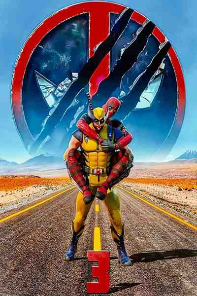
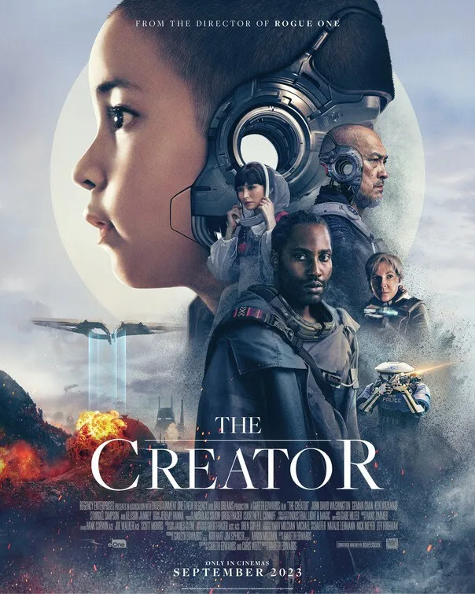

Ponte al día con nuestra selección de noticias, toda la actualidad del cine
Las 15 películas de acción más esperadas de 2024

Repasamos las mejores películas de acción estrenadas en un año en el que los superhéroes se toma un descanso. 'Furiosa', 'Deadpool y Lobezno'...
La huelga de actores y guionistas del año pasado ha provocado que muchos de los estrenos previstos para este año se hayan movido al siguiente, a 2025, pero eso no quiere decir que el cine de acción se vaya a quedar cojo. Ni mucho menos. Aunque lo cierto es que estaba difícil, porque entre las mejores películas de acción de 2023 pudimos disfrutar de nuevas entregas de sagas históricas como 'Indiana Jones', 'Fast & Furious', 'Misión imposible' y 'John Wick'. Pero ojo a todas las películas de acción que están llegando este 2024.
El año comienza fuerte con Jason Statham, el último gran héroe de acción según el director de 'The Beekeeper: El protector' David Ayer. "He crecido viendo clásicos de acción como 'Jungla de cristal' (John McTiernan, 1988), 'Límite: 48 horas' (Walter Hill, 1982) o las películas de Charles Bronson", nos contaba un nostálgico Ayer en el estreno sobre sus influencias. "Y todas tienen algo en común: sus protagonistas parecen normales y corrientes. Podrían ser tu padre o tu hermano. Pero una vez que comienza la acción, no puedes apartar la mirada. Son hipnóticos. Y eso es algo que Jason Statham transmite a la perfección. Ha sido tremendamente fácil construir una película tradicional de acción alrededor de una estrella clásica con una presencia tan imponente como Jason."
Y es que ya no hay iconos como Arnold Schwarzenegger, Sylvester Stallone o Bruce Willis, eso es cierto, pero el cine de acción ha evolucionado y ha pasado de apostar todo a sus 'hombres orquesta' a construir espectaculares secuencias repletas de CGI, explosiones imposibles y piruetas acrobáticas. Cada vez hay menos justicieros armados sólo con un cuchillo frente a auténticos ejércitos protagonizando las mejores escenas de acción de la historia del cine, ahora lo que se llevan son los superhéroes. Sin embargo, en 2024 solo tenemos una película de Marvel, 'Deadpool 3', y ninguna de DC. A falta de películas de Marvel y DC, el cine de superhéroes está casi monopolizado por el Spider-verso de Sony, con 'Madame Web', 'Kraven el cazador' y 'Venom 3'. Es decir, 2024 es un erial superheroico. Y quizá es lo que necesite el género ahora mismo.
En su lugar tenemos espías ('Argylle'), artes marciales ('Kung Fu Panda 4', 'Karate Kid 2'), venganza ('Thug') y stuntmen ('El especialista), pero sin duda dos de los estrenos más destacados son 'Ballerina' y 'Furiosa', dos spin-offs de grandes sagas de acción protagonizados por personajes femeninos. Ana de Armas protagoniza la primera, iniciándose en el universo de 'John Wick', mientras que Anya Taylor-Joy se mete en la piel de una versión más joven del personaje de Charlize Theron en 'Mad Max: Furia en la carretera', una de las mejores películas de acción del siglo XXI.
La cinta revelación de ciencia ficción en Disney+

Está en Disney+ y es una de las películas de ciencia ficción más ambiciosas y visualmente más espectaculares de los últimos años. Se trata de The Creator
El pasado año no fue especialmente bueno en cuanto a producciones de ciencia ficción de gran calidad. Sí llamaron especialmente la atención de crítica y público 'Spider-Man: Cruzando el Multiverso' y 'Guardianes de la galaxia Vol. 3', dos de las mejores películas de 2023.
Sin embargo, debemos rescatar una tercera película que, si bien fue un (injusto) fracaso en taquilla -poco más de 104 millones de recaudación para una producción de 80 millones de dólares- sí contó con la calidad suficiente como para ser merecedora de mejor suerte.
Gareth Edwards, director de 'Rogue One', una de las mejores películas de Star Wars, estrenó una de las películas de ciencia ficción más ambiciosas y visualmente más espectaculares de los últimos años que, ahora, puedes disfrutar en Disney+. Se trata de 'The Creator'.
La cinta nos sitúa en medio de una guerra futura entre la raza humana y las fuerzas de la inteligencia artificial. Joshua, un duro ex agente de las fuerzas especiales que llora la desaparición de su esposa es reclutado para cazar y matar al Creador, el escurridizo arquitecto de la IA avanzada que ha desarrollado una misteriosa arma con el poder de acabar con la guerra y con la propia humanidad.
Precisamente, ese poderío visual y calidad en el CGI que señalábamos con anterioridad -la película de Edwards contiene algunas de las imágenes más imaginativas del género en los últimos años- es uno de esos argumentos innegociables a la hora de alabar la película, pero hay otros aspectos que merecen ser rescatados. En la crítica de Fotogramas a 'The Creator', mostramos ciertos puntos de interés a favor y en contra de la película protagonizada por John David Washington, Madeleine Yuna Voyles, Gemma Chan, Allison Janney y Ken Watanabe.
Por este motivo, al hablar de 'The Creator', nos mostramos algo más conservadores de lo habitual. No es una de esas películas que puedes recomendar y nunca te fallarán porque este filme sobre inteligencia artificial es de los que consiguen dividir al público, una cualidad que ha servido a otras propuestas como 'Blade Runner' para ser considerada hoy en día una cinta de culto. ¿Será 'The Creator' una de esas películas de ciencia ficción que serán clásicos futuros? Solo el tiempo lo dirá.
De este modo, recuperando nuestra critica, 'The Creator' "es puro Samuel Fuller ('Invasión en Birmania') de soldados finalmente humanos deambulando por la jungla y sintiéndose felices e inmortales al lado de mujeres y niños en aldeas condenadas a la destrucción". Toda una proeza porque, como justificó su director y coguionista, "'Th
Las 20 mejores películas de terror de 2024

'Alien: Romulus', la precuela de 'Un lugar tranquilo', un nuevo Nosferatu, Nicolas Cage... este va a ser un año
apasionante para los amantes del terror.
Buenas noticias para los amantes del cine de terror: esta temporada habrá escalofríos de sobra en las salas. Para demostrarlo, repasamos las mejores películas de terror de 2024, una colección de estrenos entre los que aspiran a colarse entre los grandes títulos del género. El secreto es conseguir esa sensación de miedo que apasiona a los fans y acaba arrastrando a las salas de cine al público en general. En palabras de Edgar Wright en una entrevista con FOTOGRAMAS, director de terror y fantástico pero, sobre todo, absoluto fan de este tipo de cine: "vivimos en una época en la que parece que tenemos una buena película de terror cada semana."
Y es que las películas de terror de 2024 (y, de paso, también las series de terror) se han convertido en la continuación natural de las ferias de los horrores y del tren de la bruja sin renunciar por ello a tratar los temas más sangrantes de cada época, a veces sin otra vía de expresión que el género. El ascenso de los fascismos, la emancipación de la mujer, los conflictos raciales, la primera menstruación, los terrores sexuales, la cara más oscura de la tecnología, la enfermedad mental... todo ello ha sido tratados de forma más o menos directa, conservadora o liberal, en las películas de miedo de todos los tiempos y siguen resonando en las mejores películas
de terror recientes. Es un género que no para de reinventarse para dar forma a nuestros miedos en una pantalla grande (o pequeña: ahí están las mejores series de terror en Netflix para demostrarlo). El vampirismo emocional, la amenaza atávica del campo, la represión sexual o el colapso de las ciudades... todo lo que sea susceptible de hacerte gritar ha sido tratado por películas como 'El gabinete del doctor Caligari' o 'La matanza de Texas'.
- 'Cuando acecha la maldad' (Demián Rugna)
- 'Sleep' (Jason Yu)
- 'Dream Scenario' (Kristoffer Borgli)
- 'Imaginary' (Jeff Wadlow)
- 'La primera profecía' (Arkasha Stevenson)
- 'Immaculate' (Michael Mohan)
- 'El último late night' (Cameron Cairnes, Colin Cairnes)
- 'Los vigilantes' (Ishana Shyamalan)
- 'Un lugar tranquilo: Día uno' (Michael Sarnoski)
- 'Alien: Romulus' (Fede Álvarez)
- 'Beetlejuice Beetlejuice' (Tim Burton)
- 'Longlegs' (Osgood 'Oz' Perkins)
- 'El último viaje del Demeter' (André Øvredal)
- 'De naturaleza violenta' (Crish Nash)
- 'Winnie The Pooh 2: El bosque sangriento' (Rhys Frake-Waterfield)
- 'MaXXXXine' (Ti West)
- 'The Front Room' (Max Eggers y Sam Eggers)
- 'Smile 2' (Parker Finn)
- 'Terrifier 3' (Damien Leone)
- 'Nosferatu' (Robert Eggers)